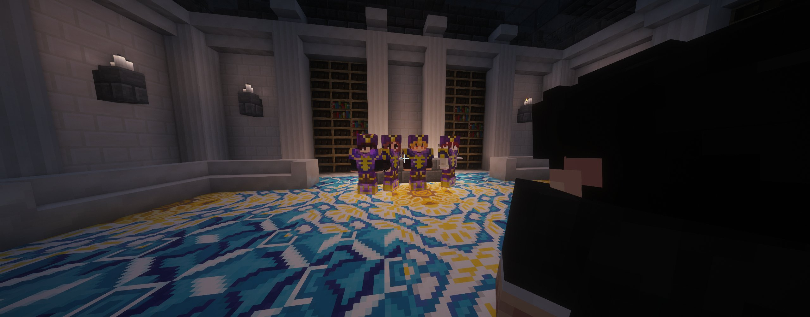
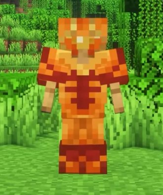
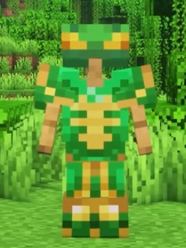

Golden Sluje ouvre sa boutique : l'art de la personnalisation d'armures
Golden Sluje, fils aîné de la prestigieuse fratrie Belazur, ouvre officiellement les portes de sa boutique de vêtements et de personnalisation d'armures.

Il y a des ouvertures qui font du bruit, et celle-là ne fait pas exception. Golden Sluje, fils aîné de la prestigieuse fratrie Belazur, ouvre officiellement les portes de sa boutique de vêtements et de personnalisation d'armures. Un projet porté par un homme aussi talentueux que sociable, qui adore le contact humain et met autant de soin dans ses créations que dans ses relations.
Un styliste à votre service
Le cœur du service de Golden Sluje, c'est la personnalisation d'armures : motifs, pierres, designs uniques — il transforme votre équipement en véritable œuvre d'art. Que vous souhaitiez vous démarquer sur le terrain ou afficher votre identité avec style, Golden Sluje est l'homme qu'il vous faut.


Comment passer commande ?
Deux options s'offrent à vous : le retrouver directement où que ce soit sur l'île, ou lui envoyer un mail avec une photo de l'armure souhaitée, la pierre du motif, et le motif désiré.
Flexibles et négociables selon la commande.
"Le style, c'est une armure en soi. Golden Sluje l'a bien compris."
— La Rédaction